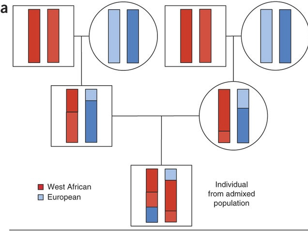
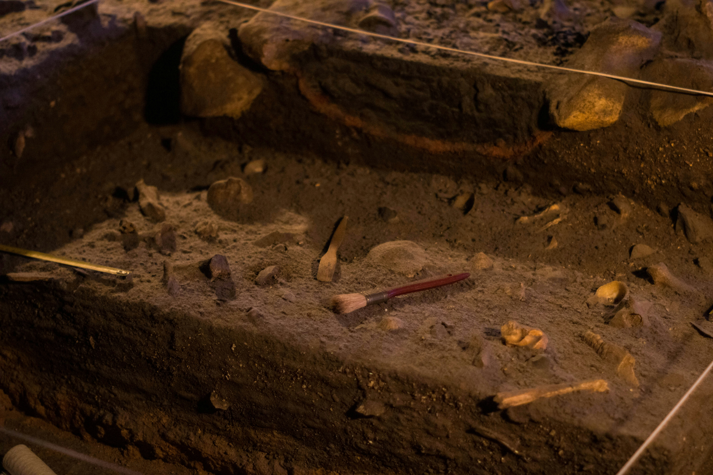

Current Projects
Below, the main projects I'm working on at the moment, alongside a global network of collaborators. Please feel free to write to me if you are interested in any of these topics and/or have any questions!

Admixture mapping of African hunter-gatherer ancestry components
In collaboration with the Ioannidis Lab at UCSC I work on using large-scale genomic datasets to explore the contributions of hunter-gatherer ancestry to complex traits and health outcomes.

Climate Informed Spatial Genetic Modelling (CISGeM)
Using paleoclimatic, genetic, archaeological and fossil data, I work on modelling how climate shape human genetic and phenotypic diversity in different places and time periods.

Mobility and genetic diversity in Central Africa
I'm working on a project examining how patterns of mobility influence genetic diversity and population structure among Central African hunter-gatherers.

Integrating archaeological and genomic data to study cultural evolution
In collaboration with the Human Paleosystems Group at the Max Planck Institute of Geoanthropology, I integrate genomic and archaeological data to understand how changing population dynamics shape cultural evolution.

Mobility and settlement in the archaeological record
Alongisde Prof. Matt Grove and Dr. James Blinkhorn from the University of Liverpool, I work on developing methods to recover signals of mobility, aggregation, and dispersal from lithic assemblages and site structures.

Settlement transitions in East Africa
Dr Olympia Campbell from the Institute of Advanced Studies in Toulouse and I are investigating the causes and consequences of changes in mobility and spatial organization in Northern Kenya.

Evolutionary origins of central place foraging
Dr Ketika Garg from Caltech and I are using computational models to try to understand how central place foraging may have evolved in the genus Homo.